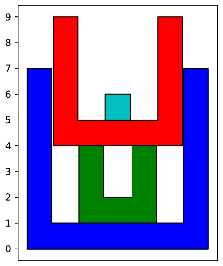

49th ICPC World Championship · Problem J
You have a collection of n cylindrical cups, where the ith cup is 2i − 1 cm tall. The cups have increasing diameters, such that cup i fits inside cup j if and only if i < j. The base of each cup is 1 cm thick (which makes the smallest cup rather useless as it is only 1 cm tall, but you keep it for sentimental reasons).
After washing all the cups, you stack them in a tower. Each cup is placed upright (in other words, with the opening at the top) and with the centers of all the cups aligned vertically. The height of the tower is defined as the vertical distance from the lowest point on any of the cups to the highest. You would like to know in what order to place the cups such that the final height (in cm) is your favorite number. Note that all n cups must be used.
For example, suppose n = 4 and your favorite number is 9. If you place the cups of heights 7, 3, 5, 1, in that order, the tower will have a total height of 9, as shown in Figure J.1.

The input consists of a single line containing two integers n and h, where n (1 ≤ n ≤ 2·105) is the number of cups and h (1 ≤ h ≤ 4·1010) is your favorite number.
If it is possible to build a tower with height h, output the heights of all the cups in the order they should be placed to achieve this. Otherwise, output impossible. If there is more than one valid ordering of cups, any one will be accepted.
4 9
7 3 5 1
4 100
impossible